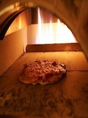
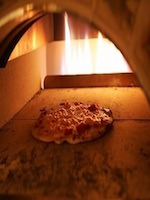

☆★ 2 ปลายเปิดใหม่! Cona ของหัวข้อ♪สถานีชินจูกุตะวันออกทางออกใกล้★☆ ◆เส้นผ่าศูนย์กลางพิซซ่าเตาอบ 23 ซม. ALL500 เยน ◆ 80 ขวดแตกต่างกันของไวน์ ALL1900 เยน ◆ที่ได้รับในการสำรองห้องพัก! สิทธิพิเศษวันเกิด Yes!
 
